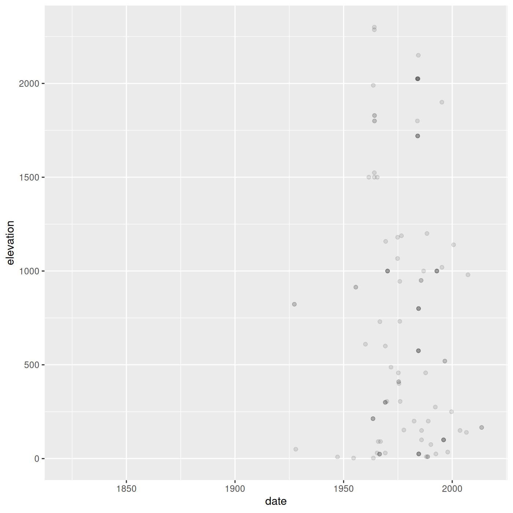

Working with data
Last updated on 2026-11-05 | Edit this page
Overview
Questions
- How do you manipulate tabular data in R?
Objectives
- Import CSV data into R.
- Understand the difference between base R and
tidyverseapproaches. - Subset rows and columns of data.frames.
- Use pipes to link steps together into pipelines.
- Create new data.frame columns using existing columns.
- Utilize the concept of split-apply-combine data analysis.
- Reshape data between wide and long formats.
- Export data to a CSV file.
R
library(tidyverse)
Importing data
Up until this point, we have been working with the
decaspermum dataframe contained in the
plantdat package. However, you typically won’t access data
from an R package; it is much more common to access data files stored
somewhere on your computer. We are now going to start using the data in
our cleaned directory inside the data
directory that you downloaded at the beginning of the lesson (instructions
here). This file is called
Decaspermum_Malaysia.csv.
File paths
When we reference other files from an R script, we need to give R
precise instructions on where those files are. We do that using
something called a file path. It looks something like
this: "Documents/Manuscripts/Chapter_2.txt". This path
would tell your computer how to get from whatever folder contains the
Documents folder all the way to the .txt
file.
There are two kinds of paths: absolute and
relative. Absolute paths are specific to a particular
computer, whereas relative paths are relative to a certain folder.
Because we are keeping all of our work in the
R-Ecology-Workshop folder, all of our paths can be relative
to this folder.
Now, let’s read our CSV file into R and store it in an object named
surveys. We will use the read_csv function
from the tidyverse’s readr package, and the
argument we give will be the relative path to the CSV
file.
R
surveys <- read_csv("data/cleaned/Decaspermum_Malaysia.csv")
OUTPUT
Rows: 964 Columns: 50
── Column specification ────────────────────────────────────────────────────────
Delimiter: ","
chr (35): datasetKey, occurrenceID, kingdom, phylum, class, order, family, ...
dbl (11): gbifID, individualCount, decimalLatitude, decimalLongitude, coord...
lgl (2): depth, depthAccuracy
dttm (2): dateIdentified, lastInterpreted
ℹ Use `spec()` to retrieve the full column specification for this data.
ℹ Specify the column types or set `show_col_types = FALSE` to quiet this message.Typing out paths can be error prone, so we can utilize a keyboard
shortcut. Inside the parentheses of read_csv(), type out a
pair of quotes and put your cursor between them. Then hit
Tab. A small menu showing your folders and files should show
up. You can use the ↑ and ↓ keys to move through
the options, or start typing to narrow them down. You can hit
Enter to select a file or folder, and hit Tab
again to continue building the file path. This might take a bit of
getting used to, but once you get the hang of it, it will speed up
writing file paths and reduce the number of mistakes you make.
You may have noticed a bit of feedback from R when you ran the last line of code. We got some useful information about the CSV file we read in. We can see:
- the number of rows and columns
- the delimiter of the file, which is how values are
separated, a comma
"," - a set of columns that were parsed as various vector
types
- the file has numeric columns
- we can see the names of the columns for each type
When working with the output of a new function, it’s often a good
idea to check the class():
R
class(surveys)
OUTPUT
[1] "spec_tbl_df" "tbl_df" "tbl" "data.frame" Whoa! What is this thing? It has multiple classes? Well, it’s called
a tibble, and it is the tidyverse version of a
data.frame. It is a data.frame, but with some added perks. It
prints out a little more nicely, it highlights NA values
and negative values in red, and it will generally communicate with you
more (in terms of warnings and errors, which is a good thing).
tidyverse vs. base R
As we begin to delve more deeply into the tidyverse, we
should briefly pause to mention some of the reasons for focusing on the
tidyverse set of tools. In R, there are often many ways to
get a job done, and there are other approaches that can accomplish tasks
similar to the tidyverse.
The phrase base R is used to refer to approaches
that utilize functions contained in R’s default packages. We have
already used some base R functions, such as str(),
head(), and mean(), and we will be using more
scattered throughout this lesson. However, there are some key base R
approaches we will not be teaching. These include square bracket
subsetting and base plotting. You may come across code written by other
people that looks like surveys[1:10, 2] or
plot(surveys$weight, surveys$hindfoot_length), which are
base R commands. If you’re interested in learning more about these
approaches, you can check out other Carpentries lessons like the Software
Carpentry Programming with R lesson.
We choose to teach the tidyverse set of packages because
they share a similar syntax and philosophy, making them consistent and
producing highly readable code. They are also very flexible and
powerful, with a growing number of packages designed according to
similar principles and to work well with the rest of the packages. The
tidyverse packages tend to have very clear documentation
and wide array of learning materials that tend to be written with novice
users in mind. Finally, the tidyverse has only continued to
grow, and has strong support from RStudio, which implies that these
approaches will be relevant into the future.
Manipulating data
One of the most important skills for working with data in R is the
ability to manipulate, modify, and reshape data. The dplyr
and tidyr packages in the tidyverse provide a
series of powerful functions for many common data manipulation
tasks.
We’ll start off with two of the most commonly used dplyr
functions: select(), which selects certain columns of a
data.frame, and filter(), which filters out rows according
to certain criteria.
Between select() and filter(), it can be
hard to remember which operates on columns and which operates on rows.
select() has a
c for columns and
filter() has an
r for rows.
select()
To use the select() function, the first argument is the
name of the data.frame, and the rest of the arguments are
unquoted names of the columns you want:
R
select(surveys, genus, species, year, elevation)
OUTPUT
# A tibble: 964 × 4
genus species year elevation
<chr> <chr> <dbl> <dbl>
1 Decaspermum Decaspermum fruticosum 1990 75
2 Decaspermum Decaspermum fruticosum 1984 25
3 Decaspermum Decaspermum fruticosum 1976 NA
4 Decaspermum Decaspermum fruticosum 1984 575
5 Decaspermum Decaspermum vitis-idaea 1983 2025
6 Decaspermum Decaspermum montanum 1975 945.
7 Decaspermum Decaspermum fruticosum 1974 1180
8 Decaspermum Decaspermum fruticosum 1975 732.
9 Decaspermum Decaspermum fruticosum 1975 410
10 Decaspermum Decaspermum fruticosum 1975 400
# ℹ 954 more rowsThe columns are arranged in the order we specified inside
select().
To select all columns except specific columns, put a -
in front of the column you want to exclude:
R
select(surveys, -elevation, -year)
OUTPUT
# A tibble: 964 × 48
gbifID datasetKey occurrenceID kingdom phylum class order family genus
<dbl> <chr> <chr> <chr> <chr> <chr> <chr> <chr> <chr>
1 6561832516 7bd65a7a-f76… urn:catalog… Plantae Trach… Magn… Myrt… Myrta… Deca…
2 6561807785 7bd65a7a-f76… urn:catalog… Plantae Trach… Magn… Myrt… Myrta… Deca…
3 6561784372 7bd65a7a-f76… urn:catalog… Plantae Trach… Magn… Myrt… Myrta… Deca…
4 6561766817 7bd65a7a-f76… urn:catalog… Plantae Trach… Magn… Myrt… Myrta… Deca…
5 6561753311 7bd65a7a-f76… urn:catalog… Plantae Trach… Magn… Myrt… Myrta… Deca…
6 6561730396 7bd65a7a-f76… urn:catalog… Plantae Trach… Magn… Myrt… Myrta… Deca…
7 6561650622 7bd65a7a-f76… urn:catalog… Plantae Trach… Magn… Myrt… Myrta… Deca…
8 6561612723 7bd65a7a-f76… urn:catalog… Plantae Trach… Magn… Myrt… Myrta… Deca…
9 6561592184 7bd65a7a-f76… urn:catalog… Plantae Trach… Magn… Myrt… Myrta… Deca…
10 6561592042 7bd65a7a-f76… urn:catalog… Plantae Trach… Magn… Myrt… Myrta… Deca…
# ℹ 954 more rows
# ℹ 39 more variables: species <chr>, infraspecificEpithet <chr>,
# taxonRank <chr>, scientificName <chr>, verbatimScientificName <chr>,
# verbatimScientificNameAuthorship <chr>, countryCode <chr>, locality <chr>,
# stateProvince <chr>, occurrenceStatus <chr>, individualCount <dbl>,
# publishingOrgKey <chr>, decimalLatitude <dbl>, decimalLongitude <dbl>,
# coordinateUncertaintyInMeters <dbl>, coordinatePrecision <dbl>, …select() also works with numeric vectors for the order
of the columns. To select the 3rd, 4th, 5th, and 10th columns, we could
run the following code:
R
select(surveys, c(3:5, 10))
OUTPUT
# A tibble: 964 × 4
occurrenceID kingdom phylum species
<chr> <chr> <chr> <chr>
1 urn:catalog:MO:Tropicos:105482819 Plantae Tracheophyta Decaspermum fruticosum
2 urn:catalog:MO:Tropicos:105427229 Plantae Tracheophyta Decaspermum fruticosum
3 urn:catalog:MO:Tropicos:105414318 Plantae Tracheophyta Decaspermum fruticosum
4 urn:catalog:MO:Tropicos:105642053 Plantae Tracheophyta Decaspermum fruticosum
5 urn:catalog:MO:Tropicos:105301980 Plantae Tracheophyta Decaspermum vitis-ida…
6 urn:catalog:MO:Tropicos:105550279 Plantae Tracheophyta Decaspermum montanum
7 urn:catalog:MO:Tropicos:105457468 Plantae Tracheophyta Decaspermum fruticosum
8 urn:catalog:MO:Tropicos:105516019 Plantae Tracheophyta Decaspermum fruticosum
9 urn:catalog:MO:Tropicos:105412914 Plantae Tracheophyta Decaspermum fruticosum
10 urn:catalog:MO:Tropicos:105419266 Plantae Tracheophyta Decaspermum fruticosum
# ℹ 954 more rowsYou should be careful when using this method, since you are being less explicit about which columns you want. However, it can be useful if you have a data.frame with many columns and you don’t want to type out too many names.
Finally, you can select columns based on whether they match a certain
criteria by using the where() function. If we want all
numeric columns, we can ask to select all the columns
where the class is numeric:
R
select(surveys, where(is.numeric))
OUTPUT
# A tibble: 964 × 11
gbifID individualCount decimalLatitude decimalLongitude
<dbl> <dbl> <dbl> <dbl>
1 6561832516 NA 6 101.
2 6561807785 NA 5.97 116.
3 6561784372 NA NA NA
4 6561766817 NA 4.97 118.
5 6561753311 NA 6.05 117.
6 6561730396 NA NA NA
7 6561650622 NA NA NA
8 6561612723 NA NA NA
9 6561592184 NA NA NA
10 6561592042 NA NA NA
# ℹ 954 more rows
# ℹ 7 more variables: coordinateUncertaintyInMeters <dbl>,
# coordinatePrecision <dbl>, elevation <dbl>, elevationAccuracy <dbl>,
# day <dbl>, month <dbl>, year <dbl>Instead of giving names or positions of columns, we instead pass the
where() function with the name of another function inside
it, in this case is.numeric(), and we get all the columns
for which that function returns TRUE.
We can use this to select any columns that have any NA
values in them:
R
select(surveys, where(anyNA))
OUTPUT
# A tibble: 964 × 31
species infraspecificEpithet verbatimScientificNa…¹ locality stateProvince
<chr> <chr> <chr> <chr> <chr>
1 Decasperm… <NA> J.R. Forst. & G. Fors… Malay P… Kelantan
2 Decasperm… <NA> J.R. Forst. & G. Fors… Borneo;… Sabah
3 Decasperm… <NA> J.R. Forst. & G. Fors… Taiton … <NA>
4 Decasperm… <NA> J.R. Forst. & G. Fors… Borneo;… Sabah
5 Decasperm… <NA> Stapf Borneo;… Sabah
6 Decasperm… <NA> Ridl. Gunong … Kedah
7 Decasperm… <NA> J.R. Forst. & G. Fors… Arul Li… <NA>
8 Decasperm… <NA> J.R. Forst. & G. Fors… Penang … Penang
9 Decasperm… <NA> J.R. Forst. & G. Fors… Bkt. Br… <NA>
10 Decasperm… <NA> J.R. Forst. & G. Fors… Bukit T… Selangor
# ℹ 954 more rows
# ℹ abbreviated name: ¹verbatimScientificNameAuthorship
# ℹ 26 more variables: individualCount <dbl>, decimalLatitude <dbl>,
# decimalLongitude <dbl>, coordinateUncertaintyInMeters <dbl>,
# coordinatePrecision <dbl>, elevation <dbl>, elevationAccuracy <dbl>,
# depth <lgl>, depthAccuracy <lgl>, eventDate <chr>, day <dbl>, month <dbl>,
# year <dbl>, speciesKey <chr>, institutionCode <chr>, …filter()
The filter() function is used to select rows that meet
certain criteria. To get all the rows where the value of
year is equal to 1985, we would run the following:
R
filter(surveys, year == 1985)
OUTPUT
# A tibble: 19 × 50
gbifID datasetKey occurrenceID kingdom phylum class order family genus
<dbl> <chr> <chr> <chr> <chr> <chr> <chr> <chr> <chr>
1 6561429663 7bd65a7a-f76… urn:catalog… Plantae Trach… Magn… Myrt… Myrta… Deca…
2 4977561075 cd6e21c8-9e8… http://spec… Plantae Trach… Magn… Myrt… Myrta… Deca…
3 4858989387 cd6e21c8-9e8… http://spec… Plantae Trach… Magn… Myrt… Myrta… Deca…
4 4858973318 cd6e21c8-9e8… http://spec… Plantae Trach… Magn… Myrt… Myrta… Deca…
5 4858973304 cd6e21c8-9e8… http://spec… Plantae Trach… Magn… Myrt… Myrta… Deca…
6 4858968916 cd6e21c8-9e8… http://spec… Plantae Trach… Magn… Myrt… Myrta… Deca…
7 4850462398 cd6e21c8-9e8… http://spec… Plantae Trach… Magn… Myrt… Myrta… Deca…
8 4850461090 cd6e21c8-9e8… http://spec… Plantae Trach… Magn… Myrt… Myrta… Deca…
9 4401127340 861e6afe-f76… 6ad33d6c-36… Plantae Trach… Magn… Myrt… Myrta… Deca…
10 4401121355 861e6afe-f76… 76a26cc9-c4… Plantae Trach… Magn… Myrt… Myrta… Deca…
11 2516699077 15f819bd-661… https://dat… Plantae Trach… Magn… Myrt… Myrta… Deca…
12 2516291363 15f819bd-661… https://dat… Plantae Trach… Magn… Myrt… Myrta… Deca…
13 2516291190 15f819bd-661… https://dat… Plantae Trach… Magn… Myrt… Myrta… Deca…
14 2516276207 15f819bd-661… https://dat… Plantae Trach… Magn… Myrt… Myrta… Deca…
15 2516213427 15f819bd-661… https://dat… Plantae Trach… Magn… Myrt… Myrta… Deca…
16 2515066186 15f819bd-661… https://dat… Plantae Trach… Magn… Myrt… Myrta… Deca…
17 2514464455 15f819bd-661… https://dat… Plantae Trach… Magn… Myrt… Myrta… Deca…
18 2514427660 15f819bd-661… https://dat… Plantae Trach… Magn… Myrt… Myrta… Deca…
19 2514412446 15f819bd-661… https://dat… Plantae Trach… Magn… Myrt… Myrta… Deca…
# ℹ 41 more variables: species <chr>, infraspecificEpithet <chr>,
# taxonRank <chr>, scientificName <chr>, verbatimScientificName <chr>,
# verbatimScientificNameAuthorship <chr>, countryCode <chr>, locality <chr>,
# stateProvince <chr>, occurrenceStatus <chr>, individualCount <dbl>,
# publishingOrgKey <chr>, decimalLatitude <dbl>, decimalLongitude <dbl>,
# coordinateUncertaintyInMeters <dbl>, coordinatePrecision <dbl>,
# elevation <dbl>, elevationAccuracy <dbl>, depth <lgl>, …The == sign means “is equal to”. There are several other
operators we can use: >, >=, <, <=, and != (not equal to).
Another useful operator is %in%, which asks if the value on
the lefthand side is found anywhere in the vector on the righthand side.
For example, to get rows with specific species_id values,
we could run:
R
filter(surveys, stateProvince %in% c("Borneo", "Sarawak"))
OUTPUT
# A tibble: 193 × 50
gbifID datasetKey occurrenceID kingdom phylum class order family genus
<dbl> <chr> <chr> <chr> <chr> <chr> <chr> <chr> <chr>
1 6561379339 7bd65a7a-f76… urn:catalog… Plantae Trach… Magn… Myrt… Myrta… Deca…
2 5956592965 cfb43618-142… 657150 Plantae Trach… Magn… Myrt… Myrta… Deca…
3 5956549004 cfb43618-142… 164551 Plantae Trach… Magn… Myrt… Myrta… Deca…
4 4906914238 15f819bd-661… https://dat… Plantae Trach… Magn… Myrt… Myrta… Deca…
5 4404057434 861e6afe-f76… 57c51ab5-94… Plantae Trach… Magn… Myrt… Myrta… Deca…
6 4404051550 861e6afe-f76… b4550d67-e7… Plantae Trach… Magn… Myrt… Myrta… Deca…
7 4404050440 861e6afe-f76… 6bcd9d6a-9f… Plantae Trach… Magn… Myrt… Myrta… Deca…
8 4401132420 861e6afe-f76… fe06a857-0a… Plantae Trach… Magn… Myrt… Myrta… Deca…
9 4401132331 861e6afe-f76… 4ef97ebf-55… Plantae Trach… Magn… Myrt… Myrta… Deca…
10 4401132320 861e6afe-f76… 353fa595-96… Plantae Trach… Magn… Myrt… Myrta… Deca…
# ℹ 183 more rows
# ℹ 41 more variables: species <chr>, infraspecificEpithet <chr>,
# taxonRank <chr>, scientificName <chr>, verbatimScientificName <chr>,
# verbatimScientificNameAuthorship <chr>, countryCode <chr>, locality <chr>,
# stateProvince <chr>, occurrenceStatus <chr>, individualCount <dbl>,
# publishingOrgKey <chr>, decimalLatitude <dbl>, decimalLongitude <dbl>,
# coordinateUncertaintyInMeters <dbl>, coordinatePrecision <dbl>, …We can also use multiple conditions in one filter()
statement. Here we will get rows with a year less than or equal to 1988
and whose hindfoot length values are not NA. The
! before the is.na() function means “not”.
R
filter(surveys, year <= 1988 & !is.na(elevation))
OUTPUT
# A tibble: 94 × 50
gbifID datasetKey occurrenceID kingdom phylum class order family genus
<dbl> <chr> <chr> <chr> <chr> <chr> <chr> <chr> <chr>
1 6561807785 7bd65a7a-f76… urn:catalog… Plantae Trach… Magn… Myrt… Myrta… Deca…
2 6561766817 7bd65a7a-f76… urn:catalog… Plantae Trach… Magn… Myrt… Myrta… Deca…
3 6561753311 7bd65a7a-f76… urn:catalog… Plantae Trach… Magn… Myrt… Myrta… Deca…
4 6561730396 7bd65a7a-f76… urn:catalog… Plantae Trach… Magn… Myrt… Myrta… Deca…
5 6561650622 7bd65a7a-f76… urn:catalog… Plantae Trach… Magn… Myrt… Myrta… Deca…
6 6561612723 7bd65a7a-f76… urn:catalog… Plantae Trach… Magn… Myrt… Myrta… Deca…
7 6561592184 7bd65a7a-f76… urn:catalog… Plantae Trach… Magn… Myrt… Myrta… Deca…
8 6561592042 7bd65a7a-f76… urn:catalog… Plantae Trach… Magn… Myrt… Myrta… Deca…
9 6561582852 7bd65a7a-f76… urn:catalog… Plantae Trach… Magn… Myrt… Myrta… Deca…
10 6561508200 7bd65a7a-f76… urn:catalog… Plantae Trach… Magn… Myrt… Myrta… Deca…
# ℹ 84 more rows
# ℹ 41 more variables: species <chr>, infraspecificEpithet <chr>,
# taxonRank <chr>, scientificName <chr>, verbatimScientificName <chr>,
# verbatimScientificNameAuthorship <chr>, countryCode <chr>, locality <chr>,
# stateProvince <chr>, occurrenceStatus <chr>, individualCount <dbl>,
# publishingOrgKey <chr>, decimalLatitude <dbl>, decimalLongitude <dbl>,
# coordinateUncertaintyInMeters <dbl>, coordinatePrecision <dbl>, …Challenge 1: Filtering and selecting
- Use the surveys data to make a data.frame that has only data with years from 1980 to 1985.
R
surveys_filtered <- filter(surveys, year >= 1980 & year <= 1985)
Challenge 1: Filtering and selecting (continued)
- Use the surveys data to make a data.frame that has only the
following columns, in order:
year,month,speciesKey,coordinateUncertaintyInMeters.
R
surveys_selected <- select(surveys, year, month, speciesKey, coordinateUncertaintyInMeters)
The pipe: %>%
What happens if we want to both select() and
filter() our data? We have a couple options. First, we
could use nested functions:
R
filter(select(surveys, -day), month >= 7)
OUTPUT
# A tibble: 371 × 49
gbifID datasetKey occurrenceID kingdom phylum class order family genus
<dbl> <chr> <chr> <chr> <chr> <chr> <chr> <chr> <chr>
1 6561807785 7bd65a7a-f76… urn:catalog… Plantae Trach… Magn… Myrt… Myrta… Deca…
2 6561753311 7bd65a7a-f76… urn:catalog… Plantae Trach… Magn… Myrt… Myrta… Deca…
3 6561730396 7bd65a7a-f76… urn:catalog… Plantae Trach… Magn… Myrt… Myrta… Deca…
4 6561650622 7bd65a7a-f76… urn:catalog… Plantae Trach… Magn… Myrt… Myrta… Deca…
5 6561612723 7bd65a7a-f76… urn:catalog… Plantae Trach… Magn… Myrt… Myrta… Deca…
6 6561582852 7bd65a7a-f76… urn:catalog… Plantae Trach… Magn… Myrt… Myrta… Deca…
7 6561491291 7bd65a7a-f76… urn:catalog… Plantae Trach… Magn… Myrt… Myrta… Deca…
8 6561429663 7bd65a7a-f76… urn:catalog… Plantae Trach… Magn… Myrt… Myrta… Deca…
9 6561426864 7bd65a7a-f76… urn:catalog… Plantae Trach… Magn… Myrt… Myrta… Deca…
10 6561393056 7bd65a7a-f76… urn:catalog… Plantae Trach… Magn… Myrt… Myrta… Deca…
# ℹ 361 more rows
# ℹ 40 more variables: species <chr>, infraspecificEpithet <chr>,
# taxonRank <chr>, scientificName <chr>, verbatimScientificName <chr>,
# verbatimScientificNameAuthorship <chr>, countryCode <chr>, locality <chr>,
# stateProvince <chr>, occurrenceStatus <chr>, individualCount <dbl>,
# publishingOrgKey <chr>, decimalLatitude <dbl>, decimalLongitude <dbl>,
# coordinateUncertaintyInMeters <dbl>, coordinatePrecision <dbl>, …R will evaluate statements from the inside out. First,
select() will operate on the surveys
data.frame, removing the column day. The resulting
data.frame is then used as the first argument for filter(),
which selects rows with a month greater than or equal to 7.
Nested functions can be very difficult to read with only a few functions, and nearly impossible when many functions are done at once. An alternative approach is to create intermediate objects:
R
surveys_noday <- select(surveys, -day)
filter(surveys_noday, month >= 7)
OUTPUT
# A tibble: 371 × 49
gbifID datasetKey occurrenceID kingdom phylum class order family genus
<dbl> <chr> <chr> <chr> <chr> <chr> <chr> <chr> <chr>
1 6561807785 7bd65a7a-f76… urn:catalog… Plantae Trach… Magn… Myrt… Myrta… Deca…
2 6561753311 7bd65a7a-f76… urn:catalog… Plantae Trach… Magn… Myrt… Myrta… Deca…
3 6561730396 7bd65a7a-f76… urn:catalog… Plantae Trach… Magn… Myrt… Myrta… Deca…
4 6561650622 7bd65a7a-f76… urn:catalog… Plantae Trach… Magn… Myrt… Myrta… Deca…
5 6561612723 7bd65a7a-f76… urn:catalog… Plantae Trach… Magn… Myrt… Myrta… Deca…
6 6561582852 7bd65a7a-f76… urn:catalog… Plantae Trach… Magn… Myrt… Myrta… Deca…
7 6561491291 7bd65a7a-f76… urn:catalog… Plantae Trach… Magn… Myrt… Myrta… Deca…
8 6561429663 7bd65a7a-f76… urn:catalog… Plantae Trach… Magn… Myrt… Myrta… Deca…
9 6561426864 7bd65a7a-f76… urn:catalog… Plantae Trach… Magn… Myrt… Myrta… Deca…
10 6561393056 7bd65a7a-f76… urn:catalog… Plantae Trach… Magn… Myrt… Myrta… Deca…
# ℹ 361 more rows
# ℹ 40 more variables: species <chr>, infraspecificEpithet <chr>,
# taxonRank <chr>, scientificName <chr>, verbatimScientificName <chr>,
# verbatimScientificNameAuthorship <chr>, countryCode <chr>, locality <chr>,
# stateProvince <chr>, occurrenceStatus <chr>, individualCount <dbl>,
# publishingOrgKey <chr>, decimalLatitude <dbl>, decimalLongitude <dbl>,
# coordinateUncertaintyInMeters <dbl>, coordinatePrecision <dbl>, …This approach is easier to read, since we can see the steps in order, but after enough steps, we are left with a cluttered mess of intermediate objects, often with confusing names.
An elegant solution to this problem is an operator called the
pipe, which looks like %>%. You can
insert it by using the keyboard shortcut Shift+Cmd+M (Mac) or
Shift+Ctrl+M (Windows). Here’s how you could use a pipe to
select and filter in one step:
R
surveys %>%
select(-day) %>%
filter(month >= 7)
OUTPUT
# A tibble: 371 × 49
gbifID datasetKey occurrenceID kingdom phylum class order family genus
<dbl> <chr> <chr> <chr> <chr> <chr> <chr> <chr> <chr>
1 6561807785 7bd65a7a-f76… urn:catalog… Plantae Trach… Magn… Myrt… Myrta… Deca…
2 6561753311 7bd65a7a-f76… urn:catalog… Plantae Trach… Magn… Myrt… Myrta… Deca…
3 6561730396 7bd65a7a-f76… urn:catalog… Plantae Trach… Magn… Myrt… Myrta… Deca…
4 6561650622 7bd65a7a-f76… urn:catalog… Plantae Trach… Magn… Myrt… Myrta… Deca…
5 6561612723 7bd65a7a-f76… urn:catalog… Plantae Trach… Magn… Myrt… Myrta… Deca…
6 6561582852 7bd65a7a-f76… urn:catalog… Plantae Trach… Magn… Myrt… Myrta… Deca…
7 6561491291 7bd65a7a-f76… urn:catalog… Plantae Trach… Magn… Myrt… Myrta… Deca…
8 6561429663 7bd65a7a-f76… urn:catalog… Plantae Trach… Magn… Myrt… Myrta… Deca…
9 6561426864 7bd65a7a-f76… urn:catalog… Plantae Trach… Magn… Myrt… Myrta… Deca…
10 6561393056 7bd65a7a-f76… urn:catalog… Plantae Trach… Magn… Myrt… Myrta… Deca…
# ℹ 361 more rows
# ℹ 40 more variables: species <chr>, infraspecificEpithet <chr>,
# taxonRank <chr>, scientificName <chr>, verbatimScientificName <chr>,
# verbatimScientificNameAuthorship <chr>, countryCode <chr>, locality <chr>,
# stateProvince <chr>, occurrenceStatus <chr>, individualCount <dbl>,
# publishingOrgKey <chr>, decimalLatitude <dbl>, decimalLongitude <dbl>,
# coordinateUncertaintyInMeters <dbl>, coordinatePrecision <dbl>, …What it does is take the thing on the lefthand side and insert it as
the first argument of the function on the righthand side. By putting
each of our functions onto a new line, we can build a nice, readable
pipeline. It can be useful to think of this as a little
assembly line for our data. It starts at the top and gets piped into a
select() function, and it comes out modified somewhat. It
then gets sent into the filter() function, where it is
further modified, and then the final product gets printed out to our
console. It can also be helpful to think of %>% as
meaning “and then”. Since many tidyverse functions have
verbs for names, a pipeline can be read like a sentence.
If we want to store this final product as an object, we use an assignment arrow at the start:
R
surveys_sub <- surveys %>%
select(-day) %>%
filter(month >= 7)
A good approach is to build a pipeline step by step prior to assignment. You add functions to the pipeline as you go, with the results printing in the console for you to view. Once you’re satisfied with your final result, go back and add the assignment arrow statement at the start. This approach is very interactive, allowing you to see the results of each step as you build the pipeline, and produces nicely readable code.
Challenge 2: Using pipes
Use the surveys data to make a data.frame that has the columns
speciesKey, month, and
coordinateUncertaintyInMeters, with data from the year
1988. Use a pipe between the function calls.
R
surveys_1988 <- surveys %>%
filter(year == 1988) %>%
select(speciesKey, month, coordinateUncertaintyInMeters)
Make sure to filter() before you select().
You need to use the year column for filtering rows, but it
is discarded in the select() step. You also need to make
sure to use == instead of = when you are
filtering rows where year is equal to 1988.
Making new columns with mutate()
Another common task is creating a new column based on values in existing columns. For example, we could add a new column that has the weight in kilograms instead of grams:
R
surveys %>%
mutate(uncertainty_km = coordinateUncertaintyInMeters / 1000) %>%
select(uncertainty_km) %>%
arrange(desc(uncertainty_km))
OUTPUT
# A tibble: 964 × 1
uncertainty_km
<dbl>
1 100
2 50
3 25
4 25
5 25
6 25
7 10
8 10
9 10
10 2
# ℹ 954 more rowsYou can create multiple columns in one mutate() call,
and they will get created in the order you write them. You can use
arrange and desc to sort them as well.
We can also use multiple columns to create a single column. For example, it’s often good practice to keep the components of a date in separate columns until necessary, as we’ve done here. This is because programs like Excel can do automatic things with dates in a way that is not reproducible and sometimes hard to notice. However, now that we are working in R, we can safely put together a date column.
To put together the columns into something that looks like a date, we
can use the paste() function, which takes arguments of the
items to paste together, as well as the argument sep, which
is the character used to separate the items.
R
surveys %>%
mutate(date = paste(year, month, day, sep = "-"))
OUTPUT
# A tibble: 964 × 51
gbifID datasetKey occurrenceID kingdom phylum class order family genus
<dbl> <chr> <chr> <chr> <chr> <chr> <chr> <chr> <chr>
1 6561832516 7bd65a7a-f76… urn:catalog… Plantae Trach… Magn… Myrt… Myrta… Deca…
2 6561807785 7bd65a7a-f76… urn:catalog… Plantae Trach… Magn… Myrt… Myrta… Deca…
3 6561784372 7bd65a7a-f76… urn:catalog… Plantae Trach… Magn… Myrt… Myrta… Deca…
4 6561766817 7bd65a7a-f76… urn:catalog… Plantae Trach… Magn… Myrt… Myrta… Deca…
5 6561753311 7bd65a7a-f76… urn:catalog… Plantae Trach… Magn… Myrt… Myrta… Deca…
6 6561730396 7bd65a7a-f76… urn:catalog… Plantae Trach… Magn… Myrt… Myrta… Deca…
7 6561650622 7bd65a7a-f76… urn:catalog… Plantae Trach… Magn… Myrt… Myrta… Deca…
8 6561612723 7bd65a7a-f76… urn:catalog… Plantae Trach… Magn… Myrt… Myrta… Deca…
9 6561592184 7bd65a7a-f76… urn:catalog… Plantae Trach… Magn… Myrt… Myrta… Deca…
10 6561592042 7bd65a7a-f76… urn:catalog… Plantae Trach… Magn… Myrt… Myrta… Deca…
# ℹ 954 more rows
# ℹ 42 more variables: species <chr>, infraspecificEpithet <chr>,
# taxonRank <chr>, scientificName <chr>, verbatimScientificName <chr>,
# verbatimScientificNameAuthorship <chr>, countryCode <chr>, locality <chr>,
# stateProvince <chr>, occurrenceStatus <chr>, individualCount <dbl>,
# publishingOrgKey <chr>, decimalLatitude <dbl>, decimalLongitude <dbl>,
# coordinateUncertaintyInMeters <dbl>, coordinatePrecision <dbl>, …Since our new column gets moved all the way to the end, it doesn’t
end up printing out. We can use the relocate() function to
put it after our year column:
R
surveys %>%
mutate(date = paste(year, month, day, sep = "-")) %>%
relocate(date, .after = year)
OUTPUT
# A tibble: 964 × 51
gbifID datasetKey occurrenceID kingdom phylum class order family genus
<dbl> <chr> <chr> <chr> <chr> <chr> <chr> <chr> <chr>
1 6561832516 7bd65a7a-f76… urn:catalog… Plantae Trach… Magn… Myrt… Myrta… Deca…
2 6561807785 7bd65a7a-f76… urn:catalog… Plantae Trach… Magn… Myrt… Myrta… Deca…
3 6561784372 7bd65a7a-f76… urn:catalog… Plantae Trach… Magn… Myrt… Myrta… Deca…
4 6561766817 7bd65a7a-f76… urn:catalog… Plantae Trach… Magn… Myrt… Myrta… Deca…
5 6561753311 7bd65a7a-f76… urn:catalog… Plantae Trach… Magn… Myrt… Myrta… Deca…
6 6561730396 7bd65a7a-f76… urn:catalog… Plantae Trach… Magn… Myrt… Myrta… Deca…
7 6561650622 7bd65a7a-f76… urn:catalog… Plantae Trach… Magn… Myrt… Myrta… Deca…
8 6561612723 7bd65a7a-f76… urn:catalog… Plantae Trach… Magn… Myrt… Myrta… Deca…
9 6561592184 7bd65a7a-f76… urn:catalog… Plantae Trach… Magn… Myrt… Myrta… Deca…
10 6561592042 7bd65a7a-f76… urn:catalog… Plantae Trach… Magn… Myrt… Myrta… Deca…
# ℹ 954 more rows
# ℹ 42 more variables: species <chr>, infraspecificEpithet <chr>,
# taxonRank <chr>, scientificName <chr>, verbatimScientificName <chr>,
# verbatimScientificNameAuthorship <chr>, countryCode <chr>, locality <chr>,
# stateProvince <chr>, occurrenceStatus <chr>, individualCount <dbl>,
# publishingOrgKey <chr>, decimalLatitude <dbl>, decimalLongitude <dbl>,
# coordinateUncertaintyInMeters <dbl>, coordinatePrecision <dbl>, …Now we can see that we have a character column that contains our date
string. However, it’s not truly a date column. Dates are a type of
numeric variable with a defined, ordered scale. To turn this column into
a proper date, we will use a function from the tidyverse’s
lubridate package, which has lots of useful functions for
working with dates. The function ymd() will parse a date
string that has the order year-month-day. Let’s load the package and use
ymd().
R
library(lubridate)
surveys %>%
mutate(date = paste(year, month, day, sep = "-"),
date = ymd(date)) %>%
relocate(date, .after = year)
WARNING
Warning: There was 1 warning in `mutate()`.
ℹ In argument: `date = ymd(date)`.
Caused by warning:
! 225 failed to parse.OUTPUT
# A tibble: 964 × 51
gbifID datasetKey occurrenceID kingdom phylum class order family genus
<dbl> <chr> <chr> <chr> <chr> <chr> <chr> <chr> <chr>
1 6561832516 7bd65a7a-f76… urn:catalog… Plantae Trach… Magn… Myrt… Myrta… Deca…
2 6561807785 7bd65a7a-f76… urn:catalog… Plantae Trach… Magn… Myrt… Myrta… Deca…
3 6561784372 7bd65a7a-f76… urn:catalog… Plantae Trach… Magn… Myrt… Myrta… Deca…
4 6561766817 7bd65a7a-f76… urn:catalog… Plantae Trach… Magn… Myrt… Myrta… Deca…
5 6561753311 7bd65a7a-f76… urn:catalog… Plantae Trach… Magn… Myrt… Myrta… Deca…
6 6561730396 7bd65a7a-f76… urn:catalog… Plantae Trach… Magn… Myrt… Myrta… Deca…
7 6561650622 7bd65a7a-f76… urn:catalog… Plantae Trach… Magn… Myrt… Myrta… Deca…
8 6561612723 7bd65a7a-f76… urn:catalog… Plantae Trach… Magn… Myrt… Myrta… Deca…
9 6561592184 7bd65a7a-f76… urn:catalog… Plantae Trach… Magn… Myrt… Myrta… Deca…
10 6561592042 7bd65a7a-f76… urn:catalog… Plantae Trach… Magn… Myrt… Myrta… Deca…
# ℹ 954 more rows
# ℹ 42 more variables: species <chr>, infraspecificEpithet <chr>,
# taxonRank <chr>, scientificName <chr>, verbatimScientificName <chr>,
# verbatimScientificNameAuthorship <chr>, countryCode <chr>, locality <chr>,
# stateProvince <chr>, occurrenceStatus <chr>, individualCount <dbl>,
# publishingOrgKey <chr>, decimalLatitude <dbl>, decimalLongitude <dbl>,
# coordinateUncertaintyInMeters <dbl>, coordinatePrecision <dbl>, …R
surveys %>%
mutate(date = paste(year, month, day, sep = "-"),
date = as.Date(date)) %>%
relocate(date, .after = year)
OUTPUT
# A tibble: 964 × 51
gbifID datasetKey occurrenceID kingdom phylum class order family genus
<dbl> <chr> <chr> <chr> <chr> <chr> <chr> <chr> <chr>
1 6561832516 7bd65a7a-f76… urn:catalog… Plantae Trach… Magn… Myrt… Myrta… Deca…
2 6561807785 7bd65a7a-f76… urn:catalog… Plantae Trach… Magn… Myrt… Myrta… Deca…
3 6561784372 7bd65a7a-f76… urn:catalog… Plantae Trach… Magn… Myrt… Myrta… Deca…
4 6561766817 7bd65a7a-f76… urn:catalog… Plantae Trach… Magn… Myrt… Myrta… Deca…
5 6561753311 7bd65a7a-f76… urn:catalog… Plantae Trach… Magn… Myrt… Myrta… Deca…
6 6561730396 7bd65a7a-f76… urn:catalog… Plantae Trach… Magn… Myrt… Myrta… Deca…
7 6561650622 7bd65a7a-f76… urn:catalog… Plantae Trach… Magn… Myrt… Myrta… Deca…
8 6561612723 7bd65a7a-f76… urn:catalog… Plantae Trach… Magn… Myrt… Myrta… Deca…
9 6561592184 7bd65a7a-f76… urn:catalog… Plantae Trach… Magn… Myrt… Myrta… Deca…
10 6561592042 7bd65a7a-f76… urn:catalog… Plantae Trach… Magn… Myrt… Myrta… Deca…
# ℹ 954 more rows
# ℹ 42 more variables: species <chr>, infraspecificEpithet <chr>,
# taxonRank <chr>, scientificName <chr>, verbatimScientificName <chr>,
# verbatimScientificNameAuthorship <chr>, countryCode <chr>, locality <chr>,
# stateProvince <chr>, occurrenceStatus <chr>, individualCount <dbl>,
# publishingOrgKey <chr>, decimalLatitude <dbl>, decimalLongitude <dbl>,
# coordinateUncertaintyInMeters <dbl>, coordinatePrecision <dbl>, …Now we can see that our date column has the type
date as well. In this example, we created our column with
two separate lines in mutate(), but we can combine them
into one:
R
# using nested functions
surveys %>%
mutate(date = ymd(paste(year, month, day, sep = "-"))) %>%
relocate(date, .after = year)
WARNING
Warning: There was 1 warning in `mutate()`.
ℹ In argument: `date = ymd(paste(year, month, day, sep = "-"))`.
Caused by warning:
! 225 failed to parse.OUTPUT
# A tibble: 964 × 51
gbifID datasetKey occurrenceID kingdom phylum class order family genus
<dbl> <chr> <chr> <chr> <chr> <chr> <chr> <chr> <chr>
1 6561832516 7bd65a7a-f76… urn:catalog… Plantae Trach… Magn… Myrt… Myrta… Deca…
2 6561807785 7bd65a7a-f76… urn:catalog… Plantae Trach… Magn… Myrt… Myrta… Deca…
3 6561784372 7bd65a7a-f76… urn:catalog… Plantae Trach… Magn… Myrt… Myrta… Deca…
4 6561766817 7bd65a7a-f76… urn:catalog… Plantae Trach… Magn… Myrt… Myrta… Deca…
5 6561753311 7bd65a7a-f76… urn:catalog… Plantae Trach… Magn… Myrt… Myrta… Deca…
6 6561730396 7bd65a7a-f76… urn:catalog… Plantae Trach… Magn… Myrt… Myrta… Deca…
7 6561650622 7bd65a7a-f76… urn:catalog… Plantae Trach… Magn… Myrt… Myrta… Deca…
8 6561612723 7bd65a7a-f76… urn:catalog… Plantae Trach… Magn… Myrt… Myrta… Deca…
9 6561592184 7bd65a7a-f76… urn:catalog… Plantae Trach… Magn… Myrt… Myrta… Deca…
10 6561592042 7bd65a7a-f76… urn:catalog… Plantae Trach… Magn… Myrt… Myrta… Deca…
# ℹ 954 more rows
# ℹ 42 more variables: species <chr>, infraspecificEpithet <chr>,
# taxonRank <chr>, scientificName <chr>, verbatimScientificName <chr>,
# verbatimScientificNameAuthorship <chr>, countryCode <chr>, locality <chr>,
# stateProvince <chr>, occurrenceStatus <chr>, individualCount <dbl>,
# publishingOrgKey <chr>, decimalLatitude <dbl>, decimalLongitude <dbl>,
# coordinateUncertaintyInMeters <dbl>, coordinatePrecision <dbl>, …R
# using a pipe *inside* mutate()
surveys %>%
mutate(date = paste(year, month, day,
sep = "-") %>% ymd()) %>%
relocate(date, .after = year)
WARNING
Warning: There was 1 warning in `mutate()`.
ℹ In argument: `date = paste(year, month, day, sep = "-") %>% ymd()`.
Caused by warning:
! 225 failed to parse.OUTPUT
# A tibble: 964 × 51
gbifID datasetKey occurrenceID kingdom phylum class order family genus
<dbl> <chr> <chr> <chr> <chr> <chr> <chr> <chr> <chr>
1 6561832516 7bd65a7a-f76… urn:catalog… Plantae Trach… Magn… Myrt… Myrta… Deca…
2 6561807785 7bd65a7a-f76… urn:catalog… Plantae Trach… Magn… Myrt… Myrta… Deca…
3 6561784372 7bd65a7a-f76… urn:catalog… Plantae Trach… Magn… Myrt… Myrta… Deca…
4 6561766817 7bd65a7a-f76… urn:catalog… Plantae Trach… Magn… Myrt… Myrta… Deca…
5 6561753311 7bd65a7a-f76… urn:catalog… Plantae Trach… Magn… Myrt… Myrta… Deca…
6 6561730396 7bd65a7a-f76… urn:catalog… Plantae Trach… Magn… Myrt… Myrta… Deca…
7 6561650622 7bd65a7a-f76… urn:catalog… Plantae Trach… Magn… Myrt… Myrta… Deca…
8 6561612723 7bd65a7a-f76… urn:catalog… Plantae Trach… Magn… Myrt… Myrta… Deca…
9 6561592184 7bd65a7a-f76… urn:catalog… Plantae Trach… Magn… Myrt… Myrta… Deca…
10 6561592042 7bd65a7a-f76… urn:catalog… Plantae Trach… Magn… Myrt… Myrta… Deca…
# ℹ 954 more rows
# ℹ 42 more variables: species <chr>, infraspecificEpithet <chr>,
# taxonRank <chr>, scientificName <chr>, verbatimScientificName <chr>,
# verbatimScientificNameAuthorship <chr>, countryCode <chr>, locality <chr>,
# stateProvince <chr>, occurrenceStatus <chr>, individualCount <dbl>,
# publishingOrgKey <chr>, decimalLatitude <dbl>, decimalLongitude <dbl>,
# coordinateUncertaintyInMeters <dbl>, coordinatePrecision <dbl>, …Challenge 3: Plotting date
Because the ggplot() function takes the data as its
first argument, you can actually pipe data straight into
ggplot(). Try building a pipeline that creates the date
column and plots weight across date.
R
surveys %>%
mutate(date = ymd(paste(year, month, day, sep = "-"))) %>%
ggplot(aes(x = date, y = elevation)) +
geom_jitter(alpha = 0.1)
WARNING
Warning: There was 1 warning in `mutate()`.
ℹ In argument: `date = ymd(paste(year, month, day, sep = "-"))`.
Caused by warning:
! 225 failed to parse.WARNING
Warning: Removed 852 rows containing missing values or values outside the scale range
(`geom_point()`).
This isn’t necessarily the most useful plot, but we will learn some techniques that will help produce nice time series plots
Exporting data
Let’s say we want to send a filtered version of our data
e.g. surveys_1988 data.frame to a colleague who doesn’t use
R. In this case, we might want to save it as a CSV file.
Now we can save this data.frame to a CSV using the
write_csv() function from the readr package.
The first argument is the name of the data.frame, and the second is the
path to the new file we want to create, including the file extension
.csv.
R
write_csv(surveys_1988, "data/cleaned/surveys_1988.csv")
If we go look into our data/cleaned_data folder, we will
see this new CSV file.
- use
filter()to subset rows andselect()to subset columns - build up pipelines one step at a time before assigning the result
- it is often best to keep components of dates separate until needed,
then use
mutate()to make a date column -
group_by()can be used withsummarize()to collapse rows ormutate()to keep the same number of rows -
pivot_wider()andpivot_longer()are powerful for reshaping data, but you should plan out how to use them thoughtfully